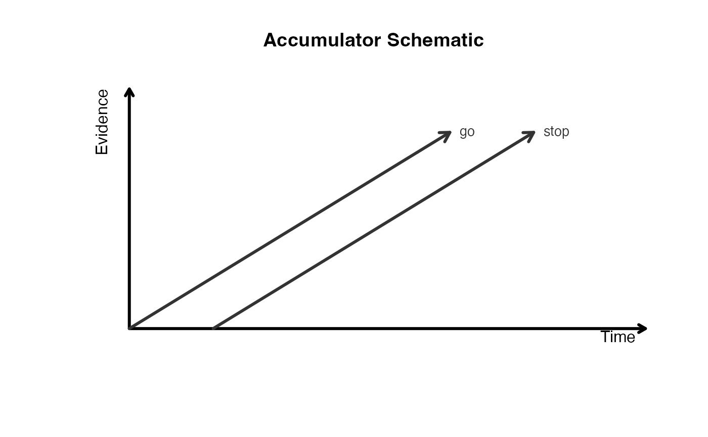

Plot accumulators and their timing relations
Source:R/plot_accumulator_evidence.R
plot_accumulators.RdDraw a schematic view of the model with time on the x-axis and evidence on the y-axis. Each accumulator is shown as a simple trajectory, and timing or blocking relations are overlaid so you can inspect the qualitative structure of the model before fitting.
Usage
plot_accumulators(
model,
xlim = NULL,
ylim = c(0, 1),
line_length = 1,
angle_dodge = 10,
accumulator_order = NULL,
curve_strength = 0.18,
line_col = "gray20",
line_lwd = 3,
axis_lwd = 3,
link_lwd = 2.2,
blocker_lwd = 2.6,
show_labels = TRUE,
main = "Accumulator Schematic",
xlab = "Time",
ylab = "Evidence",
...
)Arguments
- model
A race model (`race_spec`, a finalized model, or `model_tables`).
- xlim
Optional x-axis limits. If `NULL`, they are chosen from the model.
- ylim
Y-axis limits.
- line_length
Length of each accumulator trajectory in plot units.
- angle_dodge
Target angular spacing in degrees between neighbouring accumulators. Angles are centered at 45 degrees and constrained to the interval [10, 80]. If there are too many accumulators sharing the same onset, spacing is reduced uniformly within that onset group.
- accumulator_order
Optional character vector of accumulator labels, ordered from top-to-bottom. This only affects accumulators sharing the same onset.
- curve_strength
Curvature applied to relationship arcs.
- line_col
Color for accumulator trajectories.
- line_lwd
Line width for accumulator trajectories.
- axis_lwd
Line width for x/y axis arrows.
- link_lwd
Reserved for reciprocal relationship arrows (currently disabled).
- blocker_lwd
Line width for blocker arrows.
- show_labels
If `TRUE`, add accumulator labels near the line endpoints.
- main
Main title.
- xlab
X-axis label.
- ylab
Y-axis label.
- ...
Additional arguments passed to `graphics::plot`.
Examples
spec <- race_spec() |>
add_accumulator("go", "lognormal") |>
add_accumulator("stop", "lognormal", onset = 0.15) |>
add_pool("P", c("go", "stop")) |>
add_outcome("R", "P") |>
finalize_model()
plot_accumulators(spec)
